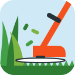
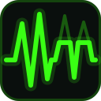

01 Literal strimmer
Side view: orange shaft and guard, spinning line, tall grass ahead and stubble behind. Says the name outright.

01-literal-strimmer.svg
02 Spin swirl
Top-down hub with two trailing lines inside the swath they sweep. Abstract enough to be a logo mark.
02-spin-swirl.svg
03 Cut line
Uneven blades on the left, mown dead level on the right along a dashed cut line. Before/after in one frame.
03-cut-line.svg
04 Stream trim
Five data lines reach the cut, two carry on. The product's function, with the kept lines in grass green.
04-stream-trim.svg
05 Blade bars
Signal bars that are blades of grass; the tall ones are trimmed to a level, ghosts show what went. Data + lawn pun.
05-blade-bars.svg
06 Monogram S
An S flung from the trimmer hub that tapers into a blade of grass. The only lettermark in the set.
06-monogram-s.svg
07 Sliced blade
One bold blade, one diagonal slice, the tip falling away. Simplest silhouette, strongest at 32px.
07-sliced-blade.svg
08 Hula tuft
A chubby tuft with the trimmer line orbiting it like a hula hoop. Bright, friendly, least technical.
08-hula-tuft.svg
09 Geometric
Flat single-colour shapes: a spinning disc over four triangles, the two beneath it mown. Works in one ink.
09-geometric.svg
10 Neon pulse
Websocket-style pulse on near-black; the right-hand peaks are mown flat, ghosts mark what was cut.

10-neon-pulse.svg